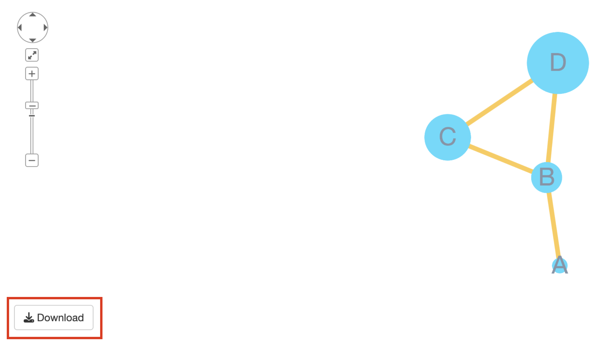

This feature added with version 1.2.0 and only available
with Shiny (not Rstudio’s viewer).
Following code is minimal example to try this feature.
ui <- function() {
fluidPage(
useShinyjs(), #1
ShinyCyJSOutput(outputId = "cy"),
actionButton('download', 'download') #2
)
}
server <- function(input, output, session) {
obj <- shinyCyJS(
list(
buildNode('a'),
buildNode('b'),
buildEdge('a','b')
)
)
output$cy <- renderShinyCyJS(obj)
observeEvent(input$download, { #3
getPNG()
})
}
shinyApp(ui, server)
Download in shiny application example
To utilize getPNG() you should follow 3 main steps.
-
useShinyjs()must be included in UI, this will allow to run javascript code of shinyCyJS in Shiny application. - build
actionButtonin UI, however it doesn’t need to name as download. -
getPNG()should be called in server withobserveEventoreventReactiveor any other reactive function with 2’s button. Also,getPNG()doesn’t require any argument. It will download the image with default namecy.png.